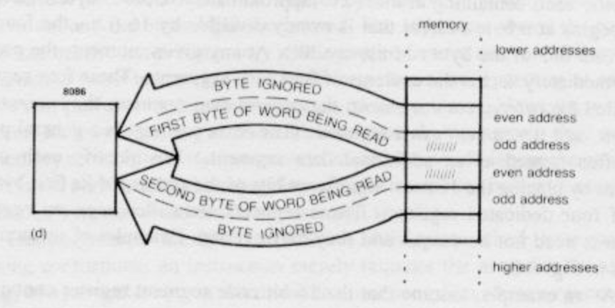

lea
Load effective address — не обращается к памяти, а загружает в регистр вычисленный адрес:
lea 4(%esi, %edi, 8), %eax // теперь eax = esi + 8*edi + 4
lea (%eax, %eax, 8), %eax // умножили eax на 9 🤡
Переход по адресу в регистре
jmp *%eax
Например:
somelabel:
...
...
mov $somelabel, %eax
jmp *%eax
Или так:
func1:
...
func2:
...
.section .rodata
functable:
.int func1
.int func2
.text
...
mov functable + 4, %eax
jmp *%eax
Выравнивание

Как правило, лучше, чтобы многобайтовые обращения к памяти были выровнены (aligned).
// начало секции
.byte 1
.int 1 // эти 4 байта лежат по адресу, не кратному 4
.balign 4 // byte align: здесь добавит 3 байта нулей
.int 1 // эти 4 байта лежат по адресу, кратному 4
.balign 2 // не добавит ничего
.short 1
Подпрограммы
Мы хотим переиспользовать код — вызывать одну и ту же последовательность инструкций из разных точек программы.
double_eax:
sal $1, %eax
jmp ... // куда?
...
jmp double_eax
// хотим продолжить исполнение здесь
...
jmp double_eax
// или здесь
Некоторые архитектуры решают это с помощью специального регистра для адреса возврата. Если бы такой был в x86, подпрограммы могли бы выглядеть так:
double_eax:
sal $1, %eax
jmp *%return_address
...
mov $1f, %return_address
jmp double_eax
1:
...
mov $1f, %return_address
jmp double_eax
1:
Но в x86 принято адрес возврата класть на стек:
double_eax:
sal $1, %eax
pop %edx // достаём из стека адрес возврата
jmp *%edx // и переходим по нему
...
push $1f // кладём в стек адрес возврата
// (адрес следующей инструкции после jmp)
jmp double_eax // и переходим на начало подпрограммы
1:
...
push $1f
jmp double_eax
1:
Для этих операций (вход в подпрограмму и возвращение из неё)
есть специальные инструкции call и ret:
double_eax:
sal $1, %eax
ret // достаём из стека адрес возврата
// и переходим по нему
...
call double_eax // кладём в стек адрес возврата
// (адрес следующей инструкции после call)
// и переходим на начало подпрограммы
...
call double_eax
В подпрограмме важно соблюдать баланс инструкций
push и pop, чтобы не промахнуться мимо адреса возврата.
Соглашения о вызовах
Чтобы разные люди (и компиляторы) могли совместно разрабатывать подпрограммы, им нужно договориться, как передавать в подпрограмму параметры, как возвращать результат и какие регистры подпрограмма не будет портить. Такие договорённости называются соглашениями о вызовах (calling conventions).
Стандартное соглашение на нашей платформе (Linux/x86) называется cdecl:
- параметры передаются в стеке, причём лежат в памяти «по порядку» (адрес увеличивается вместе с номером аргумента);
- параметры удаляет из стека тот, кто их туда положил (то есть вызывающая функция);
- возвращаемое значение в регистре eax
(а 64-битное — в паре
eax:edx); - caller-saved регистры: eax, ecx и edx;
- callee-saved регистры: все остальные.
Вооружённые этим знанием, мы теперь можем вызывать функции на Си и быть ими вызваны:
// int foobar(int a, int b)
pushl b
pushl a
call foobar
add $8, %esp
// возвращённое значение лежит в %eax
// возможная реализация функции foobar
.global foobar
foobar:
// сейчас стек выглядит так: ra a b
mov 4(%esp), %eax
add 8(%esp), %eax
ret
Локальные переменные
Под них мы выделяем место на стеке:
baz:
sub $8, %esp // выделили себе 8 байт, в которых неизвестно что
push $0 // выделили себе 4 байта, в которых 0
// сейчас стек выглядит так: 0 ? ? ra arg1 arg2...
Чтобы обращаться к аргументами функции через esp, придётся помнить, на сколько мы этот esp сместили:
mov 16(%esp), %eax // достали первый аргумент
Стековый кадр
Принято при входе в функцию сохранять esp в регистре ebp (base pointer), а сам ebp соответственно в стеке:
quux:
push %ebp
mov %esp, %ebp
/*
stack layout: oldebp ra arg1 arg2...
↑ ebp
arg1: 8(%ebp)
arg2: 12(%ebp)...
local var 1: -4(%ebp)
local var 2: -8(%ebp)...
*/
...
mov %ebp, %esp
pop %ebp
ret
Стековый кадр (stack frame):
│ ... │
├───────────────┤
│ saved ebp │ ◄─┐
│ │ │
│ │ │
│ │ │
│ arg2 │ │
│ arg1 │ │
│ return addr │ │
├───────────────┤ │
ebp→│ saved ebp │ ──┘
│ local1 │
esp→│ local2 │
│ │
Текст (не тот, который .text, а настоящий)
Кодировка ASCII.
greeting:
.byte 'H' // то же, что .byte 0x48
.byte 'i' // то же, что .byte 0x69
.byte ' '
.ascii "guy"
.asciz "s" // то же, что .ascii "s\0"
.asciz "Hi guys" // ещё раз та же последовательность байт